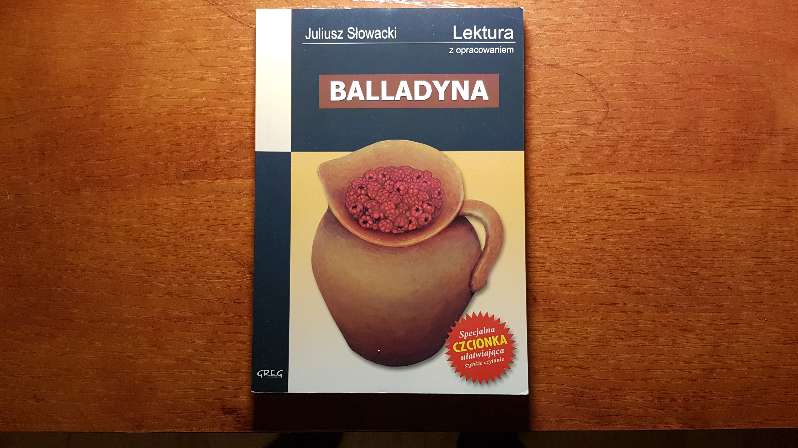
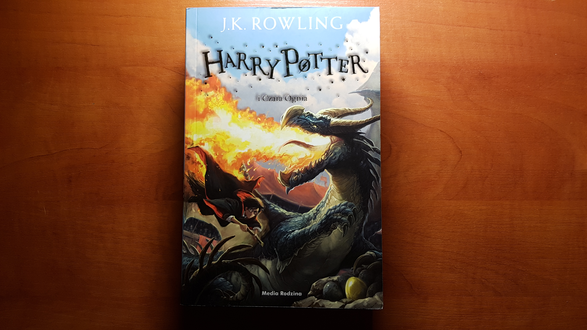
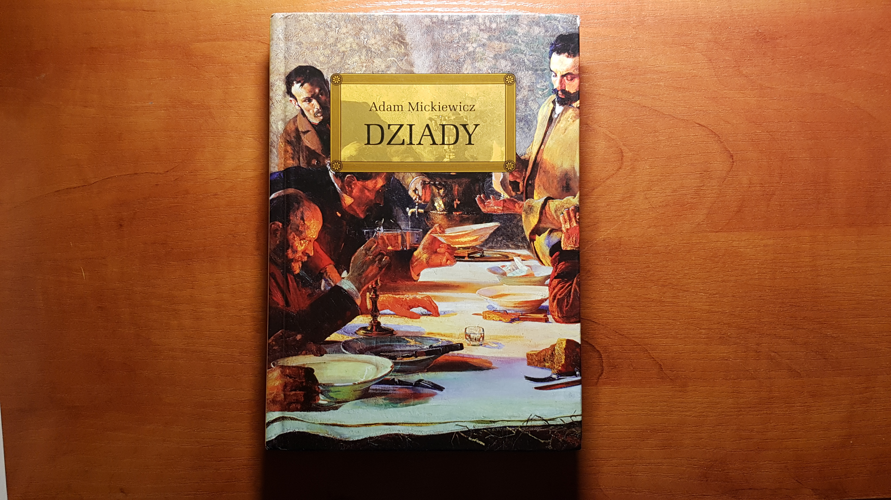
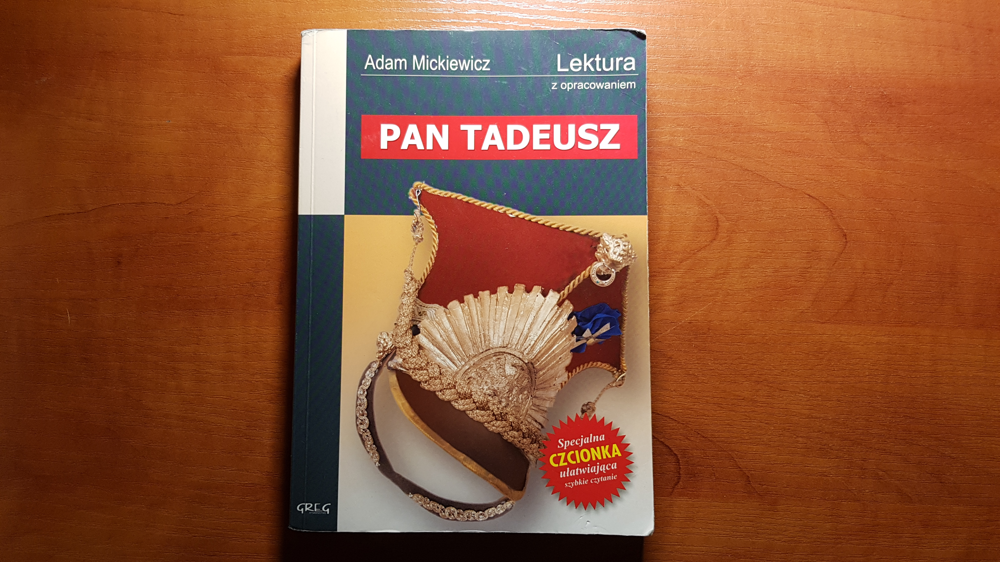
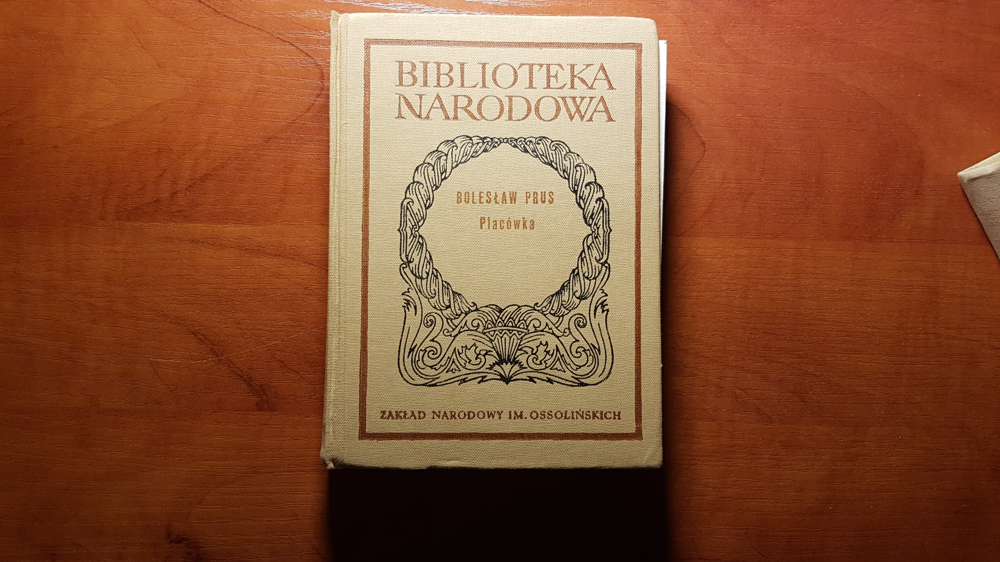
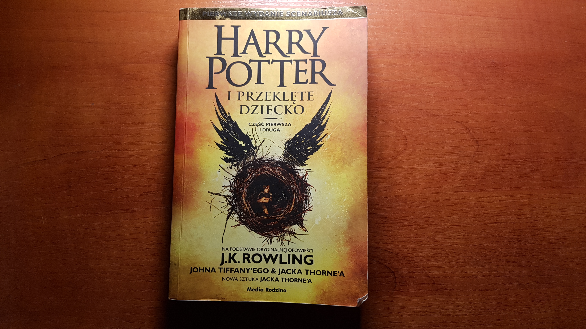
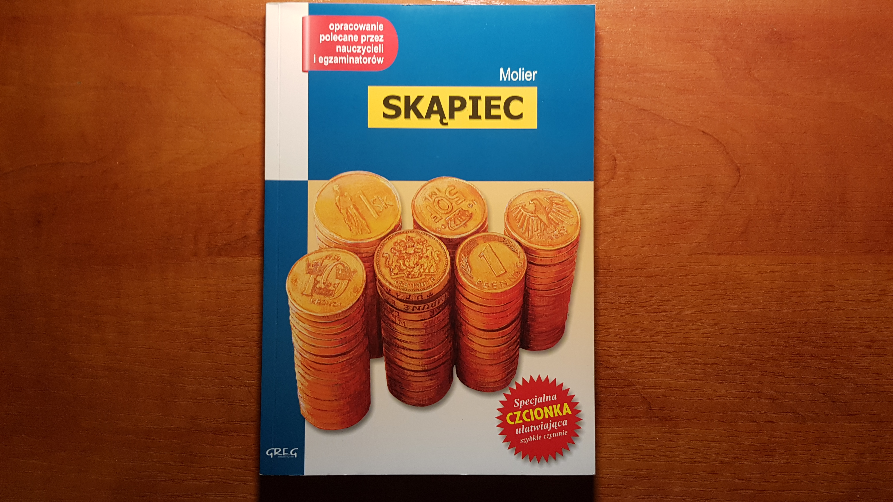
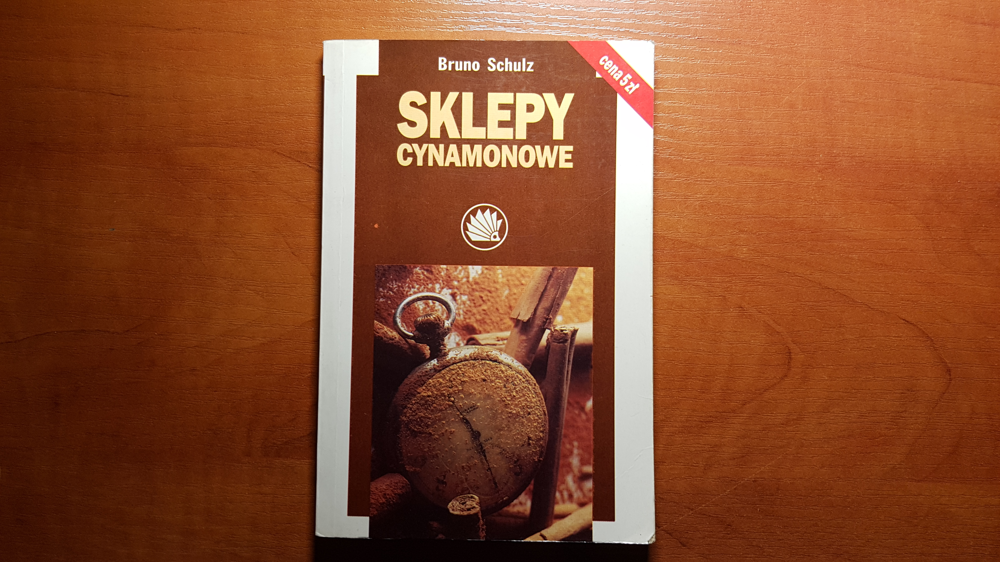

Julisz Słowacki
" Balladyna"J.K Rowling
"Czar Ognia"Adam Mickiewicz
"Dziady"
|  | Julisz Słowacki" Balladyna" | |
|  | J.K Rowling"Czar Ognia" | |
|  | Adam Mickiewicz"Dziady" | |
| George Eliot"Młyn nad Flossą" | |
|  | Adam Mickiewicz"Pan Tadeusz" | |
|  | Bolesław Prus"Placówka" | |
|  | J.K Rowling"Przeklęte Dziecko" | |
|  | Moiler"Skąpiec" | |
|  | Bruno Schulz"Sklepy Cynamonowe" |